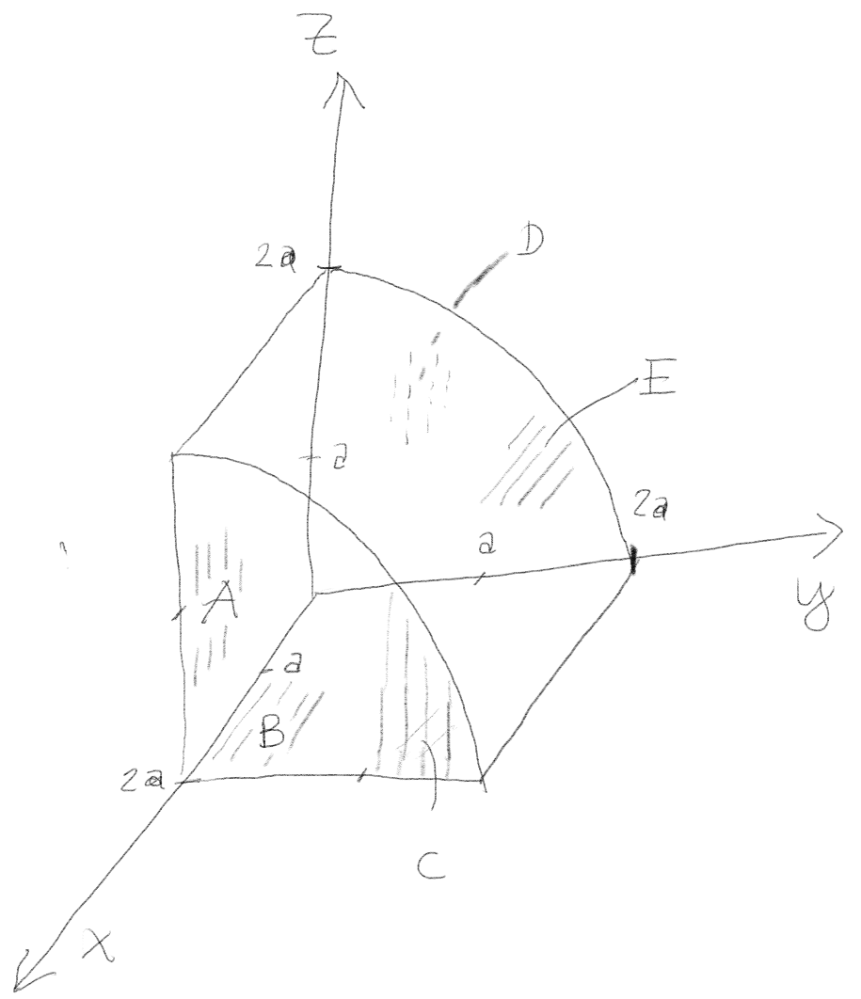

(From Sears and Semanskys)
A rubber balloon has a single point charge in its interior. Does the electric flux through the balloon depend on whether or not it is fully inflated? Explain you reasoning?
No. From Gauss' law we know that the flux through any closed surface is just \( Q_{enc}/\epsilon_0 \), where \( Q_{enc} \) is the sum of all charges within the area. And no matter how much we inflate the balloon there will always be just 1 charge on the inside.
(From Sears and Semanskys)
A certain region of space bounded by an imaginary closed surface contains no charge. Is the electric field always zero everywhere on the surface? Is the flux always zero everywhere on the surface? Gauss’ law relates the total flux to the charge contained by the surface—what will the total flux be here?
(From Sears and Semanskys)
a) In a certain region of space, the volume charge density \( \rho \) has a uniform, positive value. Can \( \vec{E} \) be uniform in this region?
Gauss law on differential form states $$ \begin{equation} \nabla \cdot \vec{E} = \frac{\rho}{\epsilon_0}. \tag{3.1} \end{equation} $$ Since \( \rho > 0 \), \( \vec{E} \) cannot be constant and therefore not uniform.
b) Suppose that in this region of uniform positive \( \rho \) there is a "bubble" within which \( \rho = 0 \). What, if anything, can you say about the electric field within this bubble using Gauss’ law?
From Gauss' law on differential form, (3.1), we get for \( \rho = 0 \) that the divergence of the electric field is zero. We cannot say anything about its value other than the fact than the divergence is zero. For example, the field from a point charge outside this region, will have zero divergence inside this region. We therefore cannot deduct that the field is zero in this region. In fact, that would be very unlikely given the positive charge density around it. However, if space was filled by a uniform volume charge density \( \rho \), and we cut a spherical hole in this infinite space, then the system would have spherical symmetry around the center of the sphere. In this particular case, the electric field would have to be zero inside the sphere.
( From Sears and Semanskys) If the electric field of a point charge were proportional to \( 1/r^3 \) instead of \( 1/r^2 \), would Gauss' law still be valid? Explain your reasoning?
Consider a spherical surface centered around a single point charge.
For a point charge we would have \( \mathbf{E}(r) = \frac{q}{4\pi\epsilon_0 r^3}\mathbf{\hat{r}} \). This field is spherically symmetric around a point charge. We take the flux out of a sphere \( S \) of radius \( R \) with the charge at the center: $$ \begin{eqnarray*} \Phi &=& \oint_S \mathbf{E}(R)\cdot \mathbf{dS} \\ &=& \frac{q}{4\pi\epsilon_0 R^3} \oint_S dS \\ &=& \frac{q}{4\pi\epsilon_0 R^3}\cdot 4\pi R^2 \\ &=& \frac{q}{\epsilon_0 R} \end{eqnarray*} $$ Gauss' law is no longer valid.
(From Steven Pollock)
In this exercise, we will use symmetry arguments and Gauss' law to find an expression for the electric field around an inifinitely long line of charge with constant charge density.
Usually, we begin by assuming that the electric field around the charged wire is entirely in the radial direction.
a) Give a brief symmetry argument for why the electric field should not have a longitudinal component (parallel with the wire).
Alternative 1: If there is a field parallel to the wire and we rotate the wire by \( 180^{\circ} \) around an axis normal to the wire, the wire does not change, and the field should therefore also not change. This can only be the case if the field parallel to the wire is zero.
Alternative 2: The contribution to the electric field at a point will come from two small pieces of wire placed symmetrically around the normal from the point to the wire. The net contribution to the field from these two pieces will cancel in the direction parallel to the wire.
b) Give a brief symmetry argument for why the electric field should not have a tangential component (circling around the wire).
We can use the same argument as above: If we rotate the wire by \( 180^{\circ} \) around an axis normal to the wire, the wire does not change, and the field should therefore also not change. For this rotation, the tangential component will rotate onto its negative. This component can only be the same if it is zero.
c) Assuming that the electric field is purely radial, why would we choose an imaginary cylinder as our Gaussian surface? Why not a sphere or a cube? (Draw how you would orient the cylinder).
Because for a cylinder with an axis along the wire, the electric field would be constant on the side cylinder surface.
d) For an infinitely long wire with uniform charge density \( \lambda \), what is the total charge on a small section of this wire of length \( L \)?
\( q = L \lambda \)
The total charge on a small section of length \( L \) is \( q = L \lambda \).
e) Use Gauss' law (on integral form) to solve for the electric field at any point around the wire. Define any symbols you use.
\( \vec{E} = \frac{1}{2 \pi \epsilon_0} \frac{\lambda}{R} \hat{u} \), where \( \hat{u} = (x,y,0)/\sqrt{x^2 + y^2} \).
We use Gauss' law on a cylinder of length \( L \) and radius \( R \). The charge inside the cylinder is \( q = L \lambda \). The flux is \( E 2 \pi R L = q/\epsilon_0 \). The field is therefore \( E = \frac{1}{2 \pi \epsilon_0} \frac{\lambda}{R} \).
f) Challenge question (for fast teams): If the wire was not inifinite, but a segment of length \( L \), would your formulation still hold, assuming you only want to know the electric field around the exact midpoint of the wire segment? Why/why not?
At the exact midpoint of the wire the symmetry argument would still hold. This is because our original arguments of symmetry come from claiming that an infinite wire at any point along the wire always has equal amount of wire at both sides of the point. At the midpoint of the wire segment this would still be true, although at any other point it would not, and in the latter case the symmetry arguments would not hold.
In this exercise you will learn to calculate fluxes for specific surfaces and to use Gauss' law to infer fluxes that may be difficult to calculate.
We will study an electric field \( \vec{E} = E_0 \y \) generated by charges that are far away. We will now study the flux through several surfaces illustrated in the figure (assume all lengths are in units of \( a \), which is a given length). Surface A and B are planar, surface E is a cylindrical shell, and surfaces C and D are the top and bottom caps that ensure that the whole volume is closed.

a) What are the surface normals for surfaces \( A \), \( B \), \( C \), and \( D \)? How would you describe the surface normal for surface \( E \)?
\( \nhat_A = (0,-1,0) \), \( \nhat_B = (0,0,-1) \), \( \nhat_C = (1,0,0) \), \( \nhat_D = (-1,0,0) \), and \( \nhat_E = (0,y,z)/\sqrt{y^2 + z^2} \).
The surface normal to surface \( A \) is \( (0,-1,0) \), to \( B \) is \( (0,0,-1) \), to \( C \) is \( (1,0,0) \), and to \( D \) is \( (-1,0,0) \). The normal vector for surface \( E \) points in the direction of the cylindrical radial vector with a cylinder axis along the \( x \)-axis, that is the vector pointing in the direction \( (0,y,z) \), which must be normalized by \( \sqrt{y^2 + z^2} \).
b) Find the flux through surfaces \( A \), \( B \), \( C \), and \( D \).
\( \Phi_A = -4 a^2 E_0 \), \( \Phi_B = \Phi_C = \Phi_D = 0 \).
We can find the flux either by taking the dot product of the surface \( \vec{A} = A\hat{n} \) and the field \( \vec{E} = E_0 \y \), or by realizing that it is only the projection of the surface onto a plane normal to \( \y \) that contributes to the flux. We use the last approach. Surfaces \( B \), \( C \) and \( D \) are normal to \( \vec{E} \) and hence the flux is zero. For surface \( A \), the area of the surface normal to \( \vec{E} \) is \( 2\times 2 \) (in units of \( a^2 \)), but the field points into the surface, so the flux is negative. The flux is therefore \( \Phi_A = -4 a^2 E_0 \).
c) Use Gauss' law to find the flux through surface \( E \). How would you find this without using Gauss' law? Discuss how your methods can be generalized to other electric fields.
\( \Phi_E = 4 a^2 E_0 \).
We notice that there are no charges inside the surface, hence the net flux through all the surfaces must be zero: $$ \begin{equation} \Phi_A + \Phi_B + \Phi_C + \Phi_D + \Phi_E = 0 \, \Rightarrow \, \Phi_E = - \left( \Phi_A + \Phi_B + \Phi_C + \Phi_D \right) \; , \tag{3.2} \end{equation} $$ which gives \( \Phi_E = 4 a^2 E_0 \).
We could have seen this simply be realizing that the projection of \( E \) onto the \( xz \) plane has an area \( 2 \times 2 a^2 \) and therefore that the flux is \( 4 a^2 E_0 \).
Let us now use a similar principle to find the flux in another situation. A charge \( q \) is placed at the origin. This is the only charge in the system. The charge sets up an electric field \( \vec{E}(\vec{r}) \).
d) What is the flux of \( \vec{E}(\vec{r}) \) through a triangular surface with corners at \( (a,0,0) \), \( (0,a,0) \) and \( (0,0,a) \)? Does the result depend on the value of \( a \)?
Make a sketch. Is there another surface you can easily find the flux through? How can you use Gauss' law?
\( \Phi = - (\pi a^2 /2) E(a) \)
To solve this problem, we can use Gauss' law. We construct a surface that consists of the triangle and a spherical surface with center at the origin and radius \( a \). To complete the surface, we need three smaller segments that are in the \( xy \), \( xz \) and \( yz \) planes - and therefore have no fluxes through them! Since there are no charges inside this surface, the net flux is zero. The flux through the triangle is negative and must be of the same magnitude as the flux through the part of the sphere in the first octant. The flux through this surface is simple to calculate, since the radius is constant and the field is normal to the surface: \( \Phi_S = (4 \pi a^2/8) E(a) \). The flux through the triangular surface is therefore \( \Phi_T = - (\pi/2) a^2 E(a) \).
(From Steven Pollock, University of Colorado - Boulder).
SLAC (Stanford Linear Accelerator Center) is where quarks (including the charm quark), and the tauon (like a heavier electron) were discovered. Charged particles are accelerated inside a long metal cylindrical pipe, which is 2 miles long and has a radius \( a = 6 \text{cm} \). All the air is pumped out of this pipe, known as the “beam line.”
One afternoon, the beam line is struck by lightning, which gives it a uniform surface charge density \( \rho_s \). After the lightning strike, Stanford physicists want to start accelerating particles in the beam line, but they are concerned that the charge density might affect the beam particles, causing them to crash into the wall of the pipe and burn a hole through it. Air and dirt would rush into the empty pipe causing months of expensive delay. You will investigate whether the surface charge of the beam line could affect the beam particles.
a) First, what is the infinitesimal area, \( \d S \), of a small patch on a cylindrical shell centered on the \( z \)-axis? Assuming you use this \( \d S \) in a surface integral over a closed surface, give the vector direction of \( \d S \).
\( \d S = a \d \phi \d z \), \( \hat{n} = (x,y,0)/\sqrt{x^2 + y^2} \).
This area is \( \d S = a \d \phi \d z \).
Figure 2: Illustration of the system.
b) What direction does the \( \vec{E} \)-field point at all points in space? Explain in detail how you know.
We assume cylindrical symmetry, which means that \( \vec{E} \) only can point in the radial direction normal to the \( z \)-axis.
c) Use Gauss’s Law to find the \( \vec{E} \)-field at all points in space.
We use a cylindrical Gauss surface of length \( L \) and radius \( r \). The field on this surface points in the radial (cylindrical) direction everywhere. The field is of the same magnitude on the surface. The flux of the field is therefore \( \Phi = 2 \pi r L E = Q/\epsilon_0 \), where \( Q \) is the charge inside the surface. When \( r < a \) there is no charge inside the surface, hence \( Q = 0 \) and \( E = 0 \). When \( r > a \), the charge inside is \( 2 \pi a L \rho_s \). The field is therefore $$ \begin{equation} 2 \pi r L E = \frac{2 \pi a L \rho_s}{\epsilon_0} \, \Rightarrow \, E = \left( \frac{a}{r} \right) \frac{\rho_s}{\epsilon_0} \; , \tag{3.4} \end{equation} $$ when \( r > a \).
d) Does the charge \( \rho_s \) on the beam line affect the particles being accelerated inside it? Could it affect the electronic equipment outside the tunnel?
We just concluded that the \( \vec{E} \)-field (due to the charge on the accelerator surface) is 0 inside the accelerator itself. This means that the charge accumulation would not affect the accelerated particles. However, there is a chance that the present \( \vec{E} \)-field on the outside of the accelerator might damage any bounding equipment, and the physicists should proceed with caution.
(Adapted from Steven Pollock)
We will now use a similar approach to calculate the polarization and the effective field in a medium due to polarization.
a) For an infinite \( xy \)-plane at \( z=0 \) with a surface charge density \( \sigma \), use Gauss' law to find the electric field at a position \( z \) both for \( z > 0 \) and for \( z < 0 \).
\( E(z) = \frac{\sigma}{2 \epsilon_0} \text{sign}(z) \).
First, we notice that due to symmetry the field must be perpendicular to the surface. We draw a cube with area \( A \) extending a distance \( z \) on each side of the plane. Applying Gauss' law to this cube, the total flux is \( EA + EA \) with contributions from each side. (Ensure that you understand the signs here). The total charge in this volume is \( A\sigma \), thus Gauss law gives that \( 2EA = A \sigma/\epsilon_0 \), and therefore \( E = \frac{\sigma}{2 \epsilon_0} \). Including the directions gives, \( E = \frac{\sigma}{2 \epsilon_0} \text{sign}(z) \), pointing in positive \( z \)-direction when \( z > 0 \) and in the negative direction when \( z < 0 \).
Let us now address a slab of plastic which is large in the \( xy \)-plane and of a thickness \( h \) in the \( z \)-direction. We assume that the inside of the plastic slab consists of a positive (\( \rho_0 \)) and a negative (\( -\rho_0 \)) charge density. The charge densities overlap and hence cancel when there is no electric field in the interior. If a uniform electric field \( \vec{E} = E \hat{z} \) is acting inside the material, the two charge densities are shifted a distance \( \Delta z \).
b) What is the charge density on the top (large \( z \)) and bottom (small \( z \)) of the slab when it is in an electric field \( \vec{E} = E \hat{z} \)? Make a sketch to illustrate the physical process.
\( \sigma_+ = \rho_0 \Delta z \), \( \sigma_- = - \rho_0 \Delta z \)
In a region of area \( V = A \Delta z \) the charge is \( Q_{+} = A \Delta z \rho_0 \) on the positive side (large \( z \)) and \( Q_{-} = - A\Delta z \rho_0 \) on the negative side (small \( z \)). Hence, the surface charge density is \( \sigma_{+} = Q_{+}/A = \rho_0 \Delta z \) and \( \sigma_{-} = Q_{-}/A = - \rho_0 \Delta z \).
c) What is the induced electric field, \( E_i \), inside the slab due to these induced surface charge densities? (\( E_i \) is the field from the induced charges, not the total electric field).
\( E_i = - \rho_0 \Delta z / \epsilon_0 \)
We find the electrical field inside the slab from the formula we found for the electric field and by superimposing the field from the top and the bottom surface charges. The field from the top charges is \( E_+ = -\rho_0 \Delta z/(2 \epsilon_0) \) and the field from the bottom charges is \( E_- = - \rho_0 \Delta z/(2 \epsilon_) \). The net induced field is therefore \( E_i = - \rho_0 \Delta z /\epsilon_0 \).
d) Assume that the displacement \( \Delta z \) of the charge densities is proportional to the total local electric field, \( \Delta z = c E_{tot} \), where \( c \) is a constant. Find an expression for the induced field inside the slab, \( E_i \), as a function of the total electric field, \( E_{tot} \), inside the slab.
\( E_i = - \rho_0 c E_0/\epsilon_0 \)
We insert \( \Delta z = c E_{tot} \), getting: \( E_i = - \rho_0 c E_{tot} / \epsilon_0 \).
e) What is the total electric field inside the slab if the slab is placed in an external field \( \vec{E}_0 = E_0 \hat{z} \)?
\( E_{tot} = E_0 /(1 + \rho_0 c/\epsilon_0) \)
\( E_{tot} = E_0 + E_i = E_0 - \rho_0 c E_{tot}/ \epsilon_0 \), which gives \( E_{tot} = E_0 /(1 + \rho_0 c/\epsilon_0) \).
Notice that this is a self-consistent equation for \( E_{tot} \).
The effective field is indeed smaller than the applied field inside the plastic slab.
f) You can assume that the external field \( \vec{E}_0 \) is the field set up by what we would call external/free charges. Can you relate your result to the general relation \( \vec{D} = \epsilon_0 \vec{E} + \vec{P} \)? (For a linear dielectric \( \vec{P} = \epsilon_0 \xi_e \vec{E} \)).
Vi har en total ladning \( Q \). Finn det elektriske feltet \( E \) overalt i rommet når
a) \( Q \) er en punktladning
\( \vec{E}(r) = \frac{Q}{4\pi\epsilon_0 r^2} \rhat \)
I alle deloppgavene har vi kulesymmetri, slik at feltet må være \( \mathbf{E} = E(r) \rhat \). Vi velger oss derfor Gaussflater som er kuleflater med radius \( r \). slik at \( \d \mathbf{S} = \nhat \d S = \rhat dS \). I kulekoordinater vet vi også at \( \d S = r^2\sin\theta\d\phi\d\theta \).
I denne oppgaven er innesluttet ladning \( Q \), slik at vi får $$ \begin{align} \oint_S \vec{E} \cdot \d\vec{S} &= 4\pi r^2 E(r) = \frac{Q}{\epsilon_0} \tag{3.5}\\ \vec{E}(r) &= \frac{Q}{4\pi\epsilon_0 r^2} \rhat \tag{3.6} \end{align} $$
b) \( Q \) er jevnt fordelt over volumet av en kule med radius \( a \) slik at romladningstettheten \( \rho_v \) er $$ \begin{equation} \rho_v = \frac{Q}{4\pi a^3 / 3}. \tag{3.7} \end{equation} $$
Venstresiden av Gauss' lov blir som i forrige deloppgave (pga kulesymmetri). På høyresiden trenger vi nå å integrere opp ladningsfordelingen for å finne den innesluttede ladningen. Vi begynner med tilfellet \( r < a \). $$ \begin{align} Q_{in} &= \int_0^{\pi}\int_0^{2\pi}\int_0^{r} \rho_v \ r^2 \sin \theta \d r \d\phi\d\theta \tag{3.8}\\ &= 4\pi\int_0^r \rho_v \ r^2 \d r = 4\pi\int_0^r \frac{Q}{4\pi a^3/3} \ r^2 \d r \tag{3.9}\\ &= \frac{3Q}{a^3}\left[ \frac{1}{3} r^3]_0^r \right] = \frac{Qr^3}{a^3} \tag{3.10} \end{align} $$ Dette utrykket gjelder for \( r \leq a \). For \( r > a \) for vi \( Q_{encl} = Q \). Dermed har vi $$ \begin{align} 4\pi r^2 E(r) &= \frac{Qr^3}{a^3} \tag{3.11}\\ \vec{E}(r) = \frac{Q}{4\pi\epsilon_0 a^3}r\rhat \tag{3.12} \end{align} $$ for \( r < a \). For \( r > a \) blir situasjonen lik som for punktladningen slik at \( \vec{E}(r) = \frac{Q}{4\pi\epsilon_0 r^2} \rhat \).
c) \( Q \) er jevnt fordelt på et kuleskall med radius \( a \) slik at overflateladningstettheten \( \rho_s \) er $$ \begin{equation} \rho_s = \frac{Q}{4\pi a^2}. \tag{3.13} \end{equation} $$
Venstresiden i Gauss' lov blir som de forrige deloppgavene (pga. kulesymmetri). På høyresiden har vi nå en situasjon der \( Q_encl \) kommer til å være en step-funksjon i \( r \). Altså kommer \( Q_encl \) til å oke fra \( 0 \) til \( 4\pi a^2 \cdot \rho_s = Q \) når vi flytter Guassflaten fra innsiden til utsiden av det ladde kuleskallet. Dermed får vi $$ \begin{equation} \vec{E}(r) = \begin{cases} \frac{Q}{4\pi\epsilon_0 r^2}\rhat &\text{ for } r > a \\ \vec{0} &\text{ for } r < a \end{cases} \tag{3.14} \end{equation} $$
d) \( Q \) er jevnt fordelt over volumet av en kule med radius \( a \) slik at romladningstettheten er proporsjonal med avstanden \( r \) fra kulens sentrum. Dvs. \( \rho_v = kr \) der \( k \) er en konstant.
Bestem \( k \) ved å regne ut \( Q = \int_v \rho \mathrm{d}v \). Geometrien i denne oppgaven gjør at det er lurt å jobbe i kulekoordinater. Husk da på å få inn rett volumelement i integralet.
Vi velger oss et kuleskall som Gaussflate og begynner med å finne den innesluttede ladningen innenfor radius \( a \), uttrykt ved \( k \), slik at vi kan finne konstanten \( k \). $$ \begin{equation} Q = \int_v \rho_v \d v = 4\pi k \int_0^a r^3 \d r = \pi k a^4 \tag{3.15} \end{equation} $$ Dermed ser vi at dersom den totale ladningen skal være \( Q \), så må \( k=\frac{Q}{\pi a^4} \) Så finner vi den innesluttede ladningen innenfor en radius \( r \): $$ \begin{equation} Q(r) = \int_v \rho_v \d v = \pi k r^4 \tag{3.16} \end{equation} $$ Vi har fortsatt kulekymmetri slik at \( \vec{E} = E(r) \rhat \). Dermed kan vi skrive $$ \begin{align} 4\pi r^2 E(r) = \frac{\pi k r^4}{\epsilon_0} = \frac{\pi Q r^4}{\pi a^4 \epsilon_0} \tag{3.17}\\ \vec{E}(r) = \frac{Qr^2}{4\pi \epsilon_0 a^4} \rhat \tag{3.18} \end{align} $$
I denne oppgaven ser vi på en uendelig stor, plan og uniform ladningsfordeling med flateladningstetthet \( \rho_s \) og sentrum i origo. \( z \)-aksen er normalvektor til planet ladningen er fordelt utover.
a) Hva vil det si at et fysisk system har translasjonssymmetri? Beskriv translasjonssymmetrien som finnes for ladningsfordelingen beskrevet over.
Et system med translasjonssymmetri har den egenskapen at systemet ser helt likt ut etter å ha blitt translatert. Et uendelig plan vil se helt likt ut dersom det translateres i en retning som ligger i samme plan som planet selv. Sagt på en annen måte. Om man observerer planet fra et punkt \( z \) over planet, så vil man ikke se forskjell dersom planet blir flyttet på i \( x \)- eller \( y \)-retning.
b) Hva vil det si at et fysisk system har rotasjonssymmetri. Beskriv rotasjonssymmetrien for ladningsfordelingen beskrevet over.
Et system med rotasjonssymmetri ser helt likt ut etter en rotasjon om en eller annen akse, for eksempel gjennom origo. Vi sier da at systemet er rotasjonssymmetrisk om origo. Det uendelige planet over er rotasjonssymmetrisk om \( z \)-aksen og alle andre rotasjoner som er parallelle med \( z \)-aksen. Om vi observerer planet fra punktet \( z \), kan vi ikke se om det har blitt rotert om \( z \)-aksen.
I tillegg har vi speilsymmetri om \( xy \)-planet. Det er det samme som rotasjonssymmetri med vinkel \( \pi \) om alle akser som ligger i \( xy \)-planet.
c) Hva kan vi si (med ord) om retningen og størrelsen til det elektriske feltet på forskjellige steder som settes opp av det uendelig store uniform ladede planet når vi kjenner disse symmetriene? (ikke bruk Gauss' lov enda)
Dersom det fysiske systemet (ladningsfordelingen) ser lik ut etter en rotasjon eller translasjon, må også feltet se likt ut.
\( \mathbf{E} = E(z)\z \)
Dersom systemet ser helt likt ut som tidligere, kan ikke konsekvensene av systemet endre seg. Altså må det elektriske feltet fra systemet ha de samme symmetriene som systemet selv. Translasjonssymmetrien gir oss at feltet må være uniformt i ethvert plan parallellt med ladningsfordelingen. Rotasjonssymmetrien om en hvilken som helst akse parallell med \( z \)-aksen fører til at feltet må stå normalt på ladningsfordelingen. Dermed kan vi skrive at $$ \begin{equation} \mathbf{E} = E(z)\z \tag{3.19} \end{equation} $$
Om vi i tillegg legger på speilsymmetrien, får vi at \( E(z) = -E(-z) \) siden feltet må se likt ut om vi snur hele platen opp ned.
d) Bruk Gauss' lov til å finne det elektriske feltet (størrelse og retning) fra et uendelig stort plan med ladningstetthet \( \rho_s \).
Vi ønsker å velge oss en Gaussflate slik at vi har et uniformt felt eller felt parallellt med flaten over klart definerbare deler av flaten. Det kan vi oppnå for eksempel med et prisme med høyde \( 2z \) som strekker seg fra \( -z \) til \( z \) og sidekanter \( a \) i \( x \)- og \( y \)-retning. Da har vi uniformt felt lik \( E(z)\z \) på endeflatene øverst og nederst i \( z \)-retning, og felt som ligger parallellt med flaten for alle andre flater på prismet (dem med normalvektor \( \pm\x \) og \( \pm\y \)). Vi setter så opp Gauss' lov: $$ \begin{equation} \Phi_S = \oint_S \mathbf{E} \cdot \d \mathbf{S} = \frac{Q_{encl}}{\epsilon_0} \tag{3.20} \end{equation} $$ På venstresiden skal vi integrere over overflaten til prismet. Vi vet at \( \mathbf{E}\cdot \d \mathbf{S} \) kommer til å være \( 0 \) for flater med normalvektor \( \pm\x \) eller \( \pm\y \). For flater med normalvektor \( \z \) og \( -\z \) får vi henholdsvis \( \Phi_{z} = a^2E(z) \) og \( \Phi_{-z} = -a^2E(-z) \).
På høyresiden har vi innesluttet ladning. Ladningen vi har innesluttet er den som ligger mellom sidekanter med lengde \( a \), altså \( Q_{encl} = a^2\rho_s \).
Til sammen har vi dermed $$ \begin{align} a^2E(z)-a^2E(-z) &= \frac{a^2\rho_s}{\epsilon_0} \tag{3.21}\\ 2E(z) &= \frac{\rho_s}{\epsilon_0} \tag{3.22}\\ E(z) = \frac{\rho_s}{2\epsilon_0} \tag{3.23} \end{align} $$
Define the following concepts and explain them in your own words:
a)
Flux is defined as $$ \begin{equation*} \Phi = \int_S \v(\rvec) \cdot \d\S \; \end{equation*} $$ Flux tells how much field is flowing through a surface.
b)
Divergence is defined as $$ \begin{equation} \text{div} \vec{A} = \lim_{\Delta v \to 0} \frac{\oint_S \vec{A} \cdot \d \vec{S}}{\Delta v}. \tag{3.24} \end{equation} $$ It can be shown that this is equivalent to $$ \begin{equation} \text{div} \vec{A} = \nabla \cdot \vec{A} \tag{3.25} \end{equation} $$ which is what we use for calculations. Divergence can be described as how much field that flows out from a point.
c)
Curl is defined as $$ \begin{equation*} (\text{curl} \vec{A})_x = \lim_{\Delta S \to 0} \frac{\oint_C \vec{A} \cdot \d \l}{\Delta S} \end{equation*} $$ It can be shown that this is equivalent to $$ \begin{equation*} \nabla \times \v = \curldet{v} \; , \end{equation*} $$ which is what is used for calculations. Curl can be described as how much field is curling (swirling) around itself. Alternatively, if you let a small test rod be affected by the field, it is how much the test rod will rotate around its midpoint.
d)
A conservative field can be defined in several ways. The most usual definition is that all closed line integrals of the field are zero. Conservative fields can be expressed as the gradient of a scalar potential. The word conservative implies that something is conserved, and in conservative fields the total energy of an object moving in the field is conserved.
Write down and explain in your own words the contents of the following theorems:
e)
The divergence theorem can be written as $$ \begin{equation*} \oint_{S} \v \cdot \d \S = \int_v (\nabla \cdot \v) \ \d v \end{equation*} $$ and tells us that calculating the flux integral of a field over a closed surface is the same as taking the volume integral of the divergence of the same field over the volume enclosed by the closed surface. Or in simpler words: The field that flows out from a volume, must come through the surface enclosing the volume.
f)
Stokes' theorem can be written as $$ \begin{equation*} \int_S (\nabla \times \v)\cdot \d\S = \oint_C \v\cdot\d\rvec \end{equation*} $$ and tells that taking the surface integral of the curl of a field over a surface \( S \) is the same as taking the line integral of the field along the curve \( C \) that bounds \( S \).
a) Beregn integralet $$ \begin{equation} I = \int_v (\nabla \cdot \mathbf{F}) \ \mathrm{d}v, \tag{3.26} \end{equation} $$ hvor \( \mathbf{F} = r\hat{\mathbf{r}} = x\hat{\mathbf{x}} + y\hat{\mathbf{y}} + z\hat{\mathbf{z}} \) og volumet \( v \) er en kule med radius \( R \) plassert i origo.
Vi regner først ut divergensen til \( \mathbf{F} \) enten i kartesiske eller kulekoordinater $$ \begin{equation} \px x + \py y + \pz z = 3 \tag{3.27} \end{equation} $$ Integralet av konstanten \( 3 \) over kulevolumet er $$ \begin{equation} I = 3V_{kule} = 3\cdot \frac{4}{3}\pi R^3 = 4\pi R^3 \tag{3.28} \end{equation} $$
Divergensteoremet forteller oss at i stedet for å ta volumintegralet av \( \nabla \cdot \mathbf{F} \) over \( v \) så kan vi ta fluksintegralet av \( \mathbf{F} \) over kuleflaten som omslutter \( v \). $$ \begin{align} \int_v (\nabla \cdot \mathbf{F}\d v &= \oint_S \mathbf{F}\cdot \d\mathbf{S} \tag{3.29}\\ &= \int_0^{2\pi} \int_0^{\pi} (R\rhat) \cdot (R^2 \sin\theta\d\theta\d\phi\rhat) \tag{3.30}\\ &= 4\pi R^3 \tag{3.31} \end{align} $$ Vi ser at svarene er like.
b) Beregn kurveintegralet $$ \begin{equation} I = \int_C \mathbf{F}\cdot \mathrm{d}\mathbf{l}, \tag{3.32} \end{equation} $$ hvor \( \mathbf{F} = (xy^2 + 2y)\hat{\mathbf{x}} + (x^2y+2x)\hat{\mathbf{y}} \),
Figure 3: To mulige kurver for integralet fra \( (0,0) \) til \( (a,b) \).
Vi parametriserer linjen \( (0, 0)\to(a, 0) \) som \( \mathbf{l}(t) = t\x \) for \( t \in [0,a] \), slik at \( \frac{\d\mathbf{l}}{\d t} = \x \) og dermed \( \d\mathbf{l} = \x \d t \). Vi setter så opp linjeintegralet: $$ \begin{align} \int_0^a ((t\cdot 0^2+2\cdot 0)\x + (t^2 \cdot 0 + 2t)\y)\cdot \x \ \d t \tag{3.33}\\ = \int_0^a 0 \ \d t = 0 \tag{3.34} \end{align} $$ Videre parametriserer vi \( (a,0)\to (a,b) \) som \( \mathbf{l}(t) = a\x + t\y \) for \( t \in [0,b] \), slik at \( \d\mathbf{l} = \y \ \d t \). Vi setter opp linjeintegralet: $$ \begin{align} \int_0^b ((at^2+2t)\x + (a^2 t + 2a)\y)\cdot \y \ \d t \tag{3.35}\\ = \int_0^b (a^2 t + 2a) \ \d t = \frac{1}{2} a^2 b^2 + 2ab \tag{3.36} \end{align} $$ Så skal vi gjøre integralet direkte opp diagonalen. Vi parametriserer linjen \( (0,0)\to (a, b) \) som \( \mathbf{l}(t) = at\x + bt\y \) for \( t \in [0,1] \), slik at \( \d\mathbf{l} = a\x + b\y \). Vi setter så opp linjeintegralet: $$ \begin{align} I &=\int_0^1 ((at(bt)^2 + 2bt)\x + ((at)^2 bt + 2at)\y)\cdot (a\x + b\y) \ \d t \tag{3.37}\\ &= \int_0^1 (a^2b^2t^3 + 2abt + a^2b^2t^3 + 2abt) \ \d t \tag{3.38}\\ &= \frac{1}{2} a^2b^2 + 2ab \tag{3.39} \end{align} $$
Svarene er like. Det betyr at vi enten har hatt flaks, eller at feltet er konservativt. Dette kan vi sjekke ved å så om virvlingen til feltet er \( 0 \) i så fall skal injeintegraler av feltet kun være avhengige av engepunktene i integralet, ikke veien man velger. $$ \begin{align} \nabla \times \mathbf{F} &= \left( \px F_x - \py F_y\right)\z \tag{3.40}\\ &= (2xy - 2xy) \tag{3.41}\\ &= 0 \tag{3.42} \end{align} $$ Siden virvlingen til \( \mathbf{F} \) er null, skal alle linjeintegraler af \( \mathbf{F} \) kun være avhenige av endepunktene. Siden begge integrasjonsveiene vi bruke over har samme endepunkter, så må integralene bli det samme.
Vi skal i denne oppgaven studere en enkel modell for en cellemembran. Vi tenker oss at cellemembranen er formet som et kuleskall med indre radius \( a \) og ytre radius \( b \). Membranen består av et dielektrisk materiale med dielektrisitetskonstant \( \epsilon \). Det er en ionepumpe gjennom membranen som gjør at på den indre overflaten (med radius \( a \)) er det en ladning \( +Q \), mens på den ytre overflaten (med radius \( b \)) er det en ladning \( -Q \).
a) Hvilken symmetri har det elektriske feltet for dette systemet?
Vi lager som alltid først en skisse av systemet.
Dette systemet har kulesymmetri. Det er derfor naturlig å beskrive det elektriske feltet i kulekoordinater: $$ \begin{equation} \vec{E} = E_r(r,\phi,\theta)\rhat + E_{\phi}(r,\phi,\theta)\phihat + E_{\theta}(r,\phi,\theta)\thetahat \; . \tag{3.43} \end{equation} $$ Siden systemet har kulesymmetri, kan ikke feltet avhenge av \( \phi \) eller \( \theta \). Dessuten kan hverken \( \phi \) eller \( \theta \)-komponenten av feltet være forskjellig fra null. Det elektriske feltet og dermed også \( \vec{D} \)-feltet har derfor formen $$ \begin{equation} \vec{E} = E_r(r) \rhat \; , \tag{3.44} \end{equation} $$ og $$ \begin{equation} \vec{D} = D_r(r) \rhat \; . \tag{3.45} \end{equation} $$
b) Hva er det elektriske feltet som funksjon av \( r \), avstanden til sentrum av cellen?
Siden systemet har kulesymmetri kan vi anvende Gauss lov. Som Gauss-flate \( S \) velger vi en kuleflate med samme sentrum som kuleskallet og radius \( r \). I dette tilfellet gir Gauss lov på integralform at $$ \begin{equation} \oint_S \vec{D} \cdot \d \vec{S} = \oint_S D_r(r) \rhat \cdot \d S \rhat = D_r(r) \oint_S \d S = D_r(r) 4 \pi r^2 = Q_{\text{in}}\; . \tag{3.46} \end{equation} $$ Dette fluksintegralet skal være lik den frie ladningen innenfor overflaten. Hvis \( r < a \) er det ikke noe fri ladning innenfor overflaten og feltet \( D_r = 0 \). Hvis \( r>b \) er netto ladning innenfor flaten \( (+Q) + (-Q) = 0 \), og dermed \( D_r(r) = 0 \). Hvis \( a < r < b \) er den frie ladningen innenfor overflaten lik \( +Q \) og vi finner at: $$ \begin{equation} D_r 4 \pi r^2 = +Q \quad \Rightarrow \quad D_r = \frac{Q}{4 \pi r^2} \; . \tag{3.47} \end{equation} $$ I området \( a < r < b \) er systemet dielektriske med dielektrisitetskonstant \( \epsilon \) slik at \( D_r = \epsilon E_r \) og dermed er \( E_r = D_r/\epsilon \): $$ \begin{equation} E_r = \frac{Q}{4 \pi \epsilon r^2} \; . \tag{3.48} \end{equation} $$
c) Hva er potensialforskjellen mellom den ytre og den indre overflaten?
Vi finner potensialforskjellen mellom den ytre og den indre overflaten gjennom integralet: $$ \begin{equation} V(b) - V(a) = \int_b^a \vec{E} \cdot \d \vec{l} = \int_b^a E_r \rhat \cdot \d r \rhat = \int_b^a E_r \d r \; . \tag{3.49} \end{equation} $$ Vi setter inn resultatet for \( E_r \) og finner at $$ \begin{equation} V(b) - V(a) = \int_b^a \frac{Q}{4 \pi \epsilon r^2} \d r = \frac{Q}{4 \pi \epsilon} \int_b^a \frac{\d r}{r^2} = \frac{Q}{4 \pi\epsion} \left( \frac{1}{b} - \frac{1}{a} \right) \; . \tag{3.50} \end{equation} $$
d) For en typisk nervecelle kan vi anta at potensialforskjellen er \( 70 \text{mV} \), den indre radiusen er \( a = 1 \mu\text{m} \), tykkelsen på cellemembranen er \( b-a = 6 \text{nm} \), og \( \epsilon = 80 \epsilon_0 \). Hvor stor ladning er det da på celleoverflaten? Hvor mange ioner med en ladning på \( -e \) svarer dette til?
Vi ser at i dette tilfellet er \( b = a + d \). Vi bruker Python til å regne ut tallverdiene:
import numpy
from scipy.constants import epsilon_0
from scipy.constants import e
dV = -70e-3 #V
a = 1e-6 # m
d = 5e-9 # m
epsilon = 80*epsilon_0
Qdive = dV*4*numpy.pi*epsilon/((1/(a+d)-1/a)*e)
print(Qdive)
Out[] : 781685.9182907249
Som forteller oss at det er omtrent 1 million ioner på eller nær overflaten til en celle og som danner den potensialforskjellen vi kan måle i en nervecelle.
(Ekstra --- ikke forventet som en del av svaret): Men hvor stort er dette tallet? For å få en ide om hvor stort dette tallet er, la oss sammenlikne med en størrelse vi kan forholde oss til. Vi kan måle hvor mange ioner det er per kvadratnanometer på overflaten. Vi vet at et vannmolekyl er ca. 0.27 nanometer i størrelse, så det gir oss noe å sammenlikne med. Vi ser at \( a = 1 \mu \text{m} = 10^3 \text{nm} \) slik at overflatearealet målt i kvadratnanometer er \( S = 4 \pi a^2 = 4 \pi (10^3 \text{nm})^2 = 4 \pi 10^6 \text{nm} \). Antall ioner per kvadratnanometer blir da:
S = 4*np.pi*(1e3)**2 # i nm^2
print(Qdive/S)
0.06220458892064814
Som et overslag tenker oss disse ionene befinner seg i et 1 nm tykt vannlag nær celleoverflaten. Hvis det er litt mer enn 3 vannmolekyler per nanometer er det ca 30 vannmolekyler i et 1 nm tykt vannlag. Det betyr at det er ca. 2 ioner per tusen vannmolekyler i dette volumet.